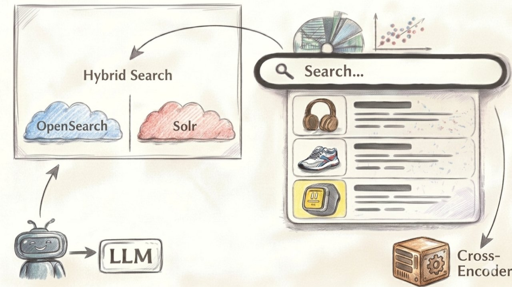
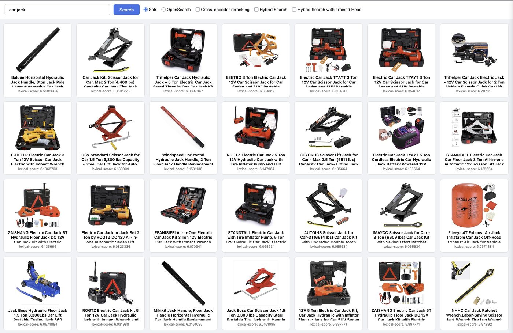
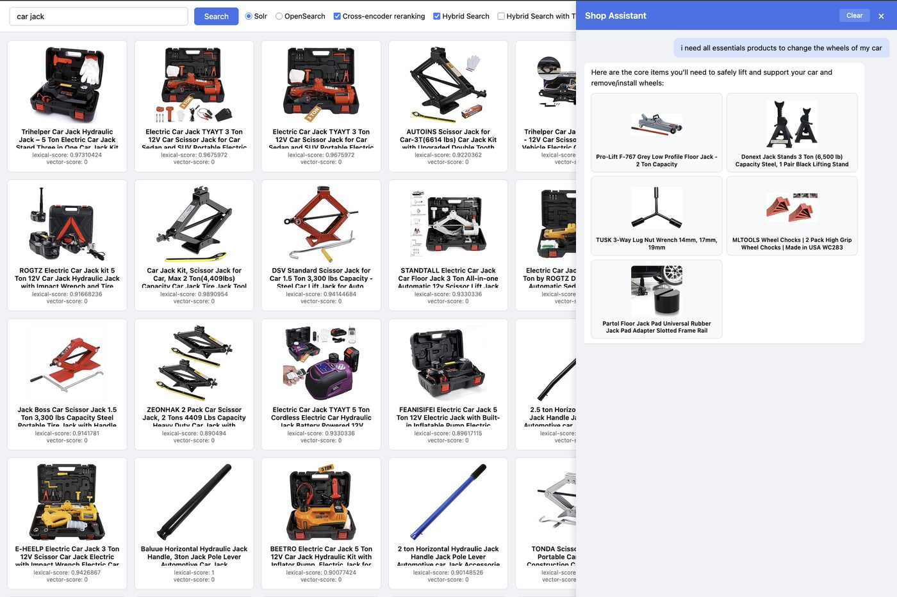
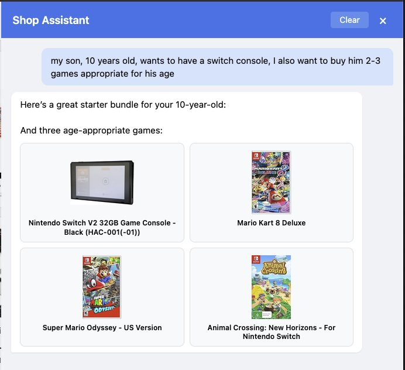
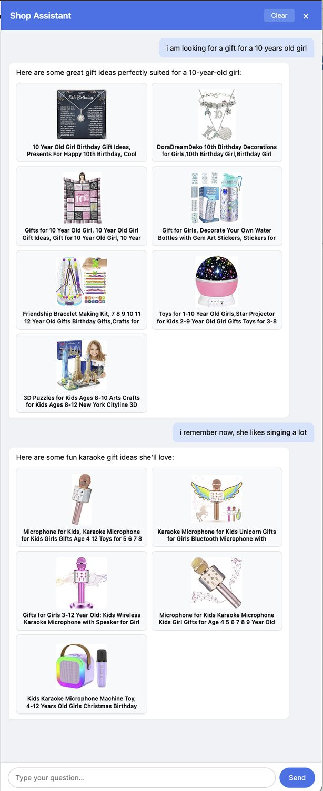

31 March 2026
All-in-One Product Search
As a little side project, I built a product search bringing several different techniques together:
- It can do hybrid search using semantic vector search.
- It uses a cross-encoder for re-ranking, to bring the most relevant results to the very top of the result page.
- On top of that, it has a shopping assistant using an agentic loop leveraging an LLM.
- I can switch the different features on and off on the fly to see their impact on the search results.
- Both Solr and OpenSearch are supported.
Key Learnings
- Balancing the two weights (lexical score and vector similarity) is tricky and comes with trade-offs.
- Self-hosted medium-size LLMs — I tried Qwen2.5-14B-Instruct and Hermes-3-Llama-3.1-8B — are not ideal for an agentic search.
- Reasoning models like OpenAI's o4-mini work very well within an agentic loop.
- A well-working e-commerce shop assistant with an agentic loop can be built very quickly, but the devil is, as usual, in the details (guardrails, performance, handling of edge cases, etc.).
Demo Use Cases
Searching for the tools required to change the tires of your car:

…or just let the shop assistant do the research for you:

Need a gift and already have an idea what it could be:

…or you just let the agent do the research for you:
